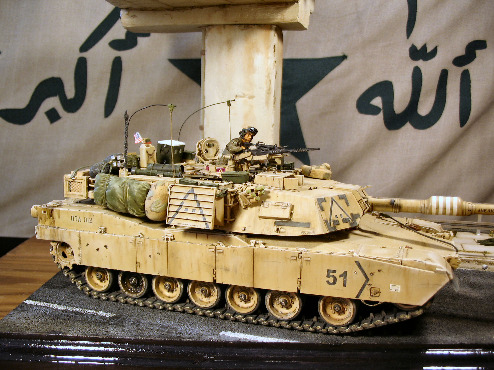
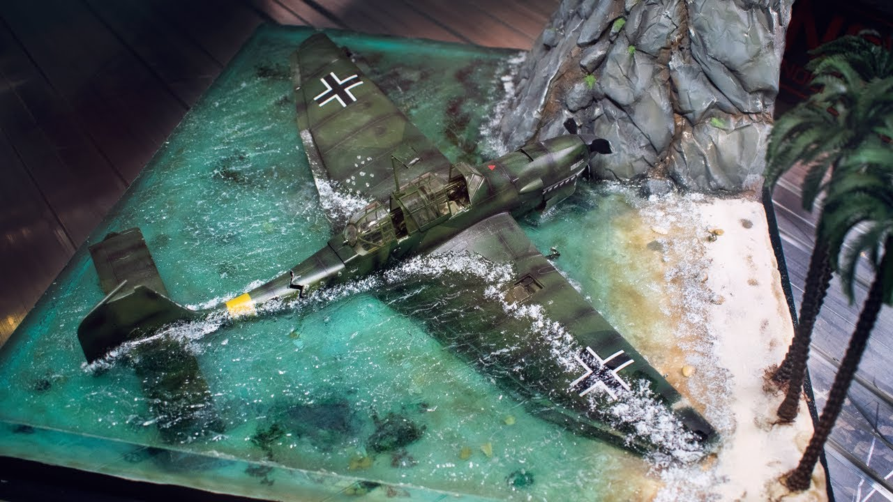

А это галерея, тут будет подборка креативных идей моделизма:
Идея номер 1, M1A1 в пустынном камуфляже:

Потребуется много краски и высокое умение.
Основа - дерево, колонна - "Пеноплекс",
набор дополнений для танка желателен.
Идея номер 2, Сломаный Junkers:
Потребуется много эпоксидной смолы.
Основа Пеноплекс, сверху песок.